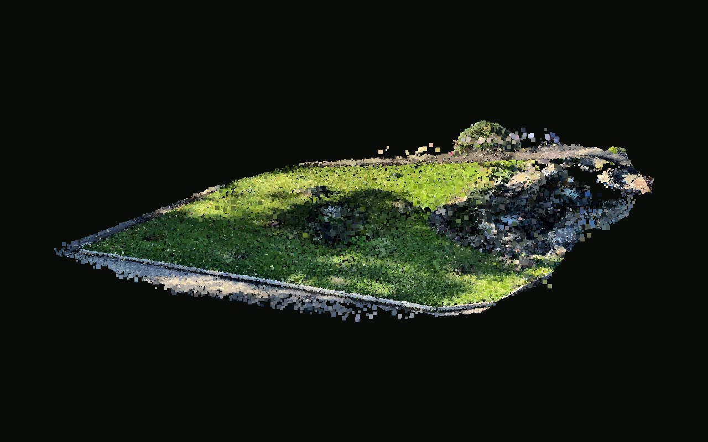
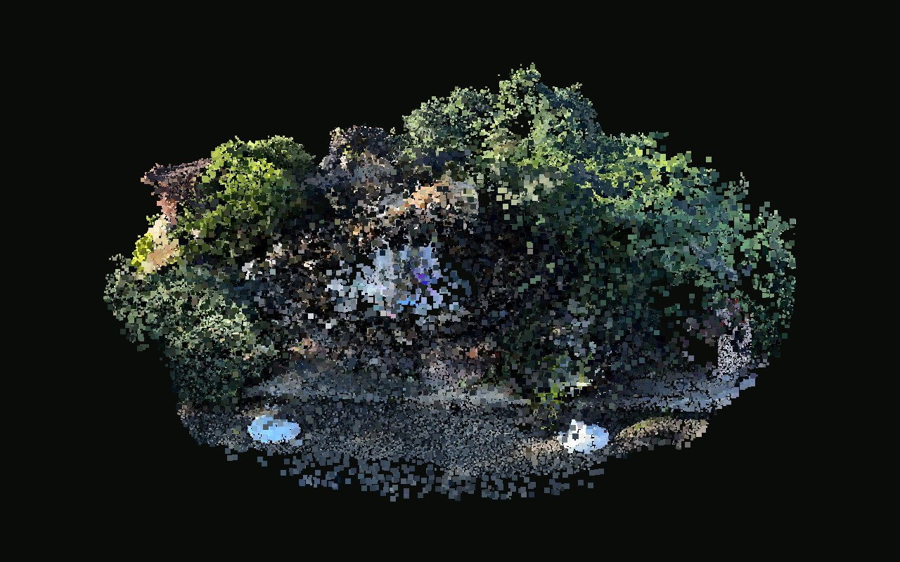

149 597 точек после очисткиКамни и каскадИсходник «Фонтан.spz». Клумба вырезана из 564 543 исходных точек; дальний фон удалён. Место — по твоей отметке на скриншоте.Открыть в 3D →
101 060 точек после очисткиКруглый фонтанИсходник «Untitled scan.spz». Клумба вырезана из 550 955 исходных точек; дальний фон удалён. Место — по твоей отметке на скриншоте.Открыть в 3D →